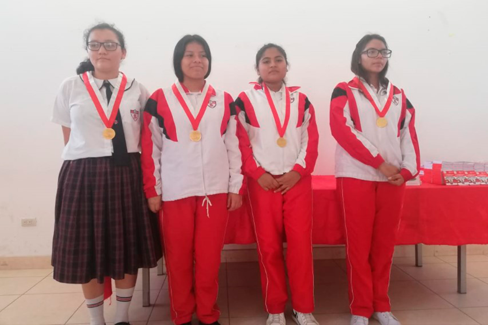

- 
NUESTROS NIVELES
PRIMARIA
En este nivel, fomentamos la expresión en todas las áreas, el manejo eficiente del saber, el crecimiento personal, espiritual, físico, emocional, social, profesional y artístico, el pensamiento lógico, y el desarrollo de las capacidades necesarias para realizar el potencial de cada estudiante. También promovemos una comprensión de los acontecimientos cercanos a sus contextos naturales y sociales.

SECUNDARIA
Brindamos educación científica, humanista y técnica. Fortalece su identidad personal y social. Amplía los aprendizajes alcanzados en el nivel de Educación Primaria. Está dirigido al desarrollo de capacidades que le permitan al estudiante acceder a conocimientos humanísticos, científicos y tecnológicos en constante evolución. Los formamos para la vida, el trabajo, la convivencia democrática, el ejercicio de la ciudadanía y para que sigan su vida profesional.